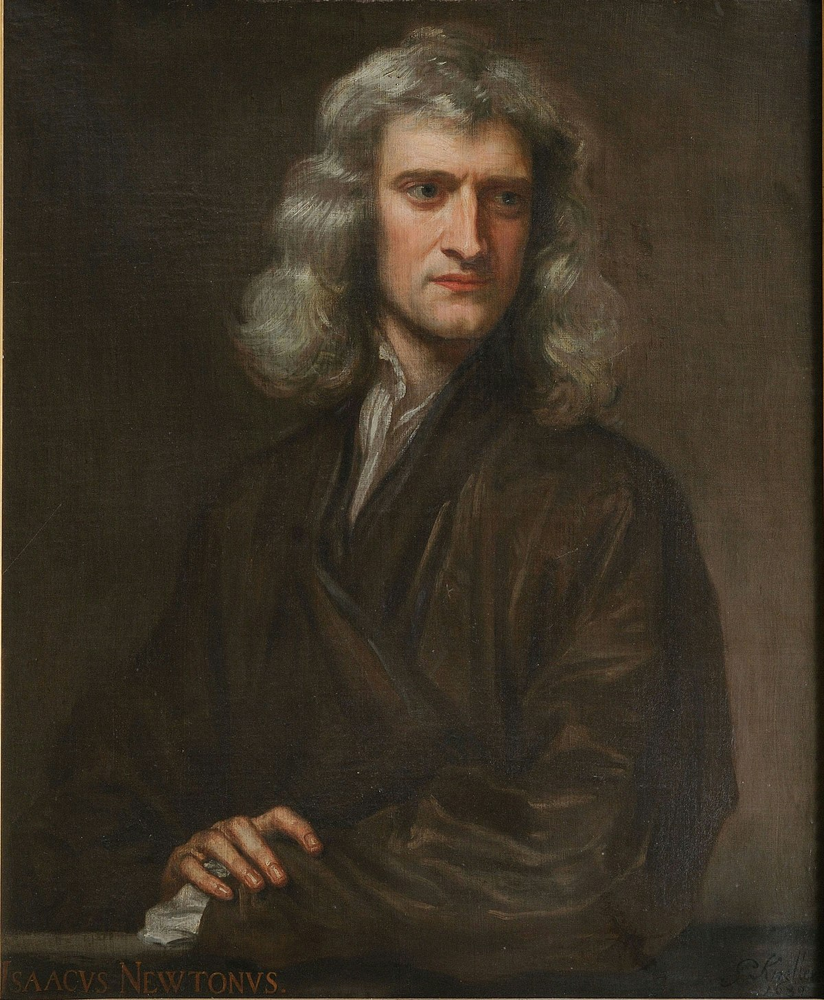
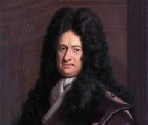

Historia sobre el calculo
Objetivos del Tema:
vimos un poco sobre la historia del calculo, quines fueron sus creadores y como fue evolucionanaod a travez del tiempo
Desarrollo breve e ilustrado de 3 contenidos del Tema
Pricipales creadores
Newton

Leibniz
Fue una actividad en la que aprendimos bastante sobre los antecedentes del calculo y nos ayudo a enriquecer nuestros conocimientos